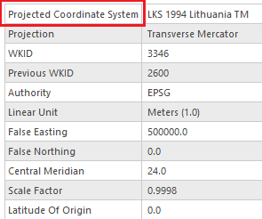
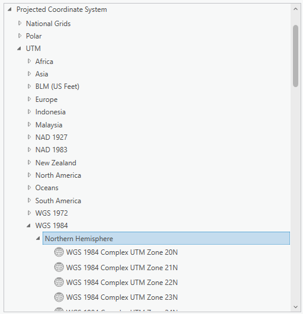
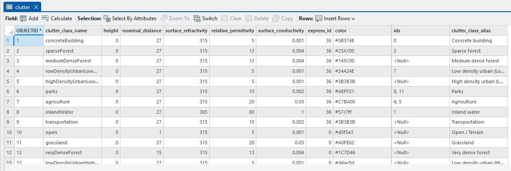
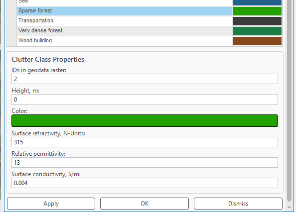
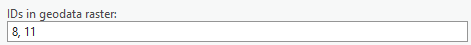
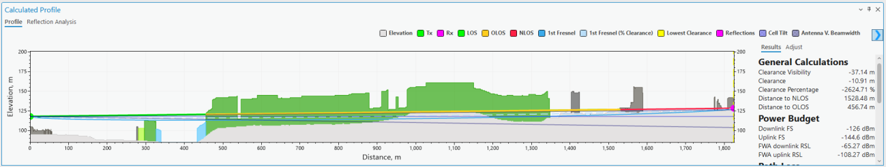
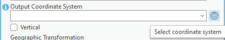
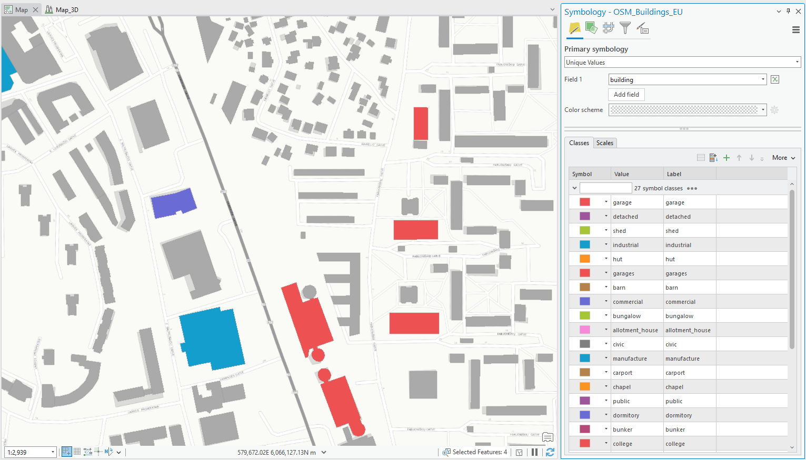
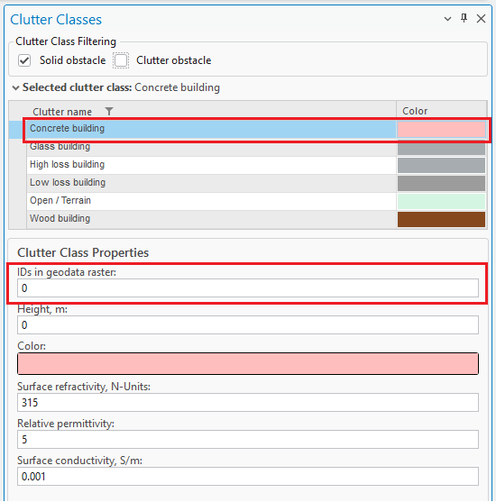

Geographic Data
Note: Shared across all CE Desktop Pro modules.
5. Geographic data
CE Desktop is designed to work with any geospatial data available to the customer and fully exploit its precision for the most accurate coverage and QoS calculations. The platform supports multi-resolution input datasets — from freely available global sources such as Sentinel-2 10 m land cover and ASTER DEM, to premium high-resolution terrain and 3D building models when provided by the customer or government agencies. Source: https://livingatlas.arcgis.com/landcoverexplorer/ By leveraging whatever data is available locally, CE Express performs nationwide calculations at the maximum feasible resolution, accurately modeling signal propagation even in dense urban environments. Support for 3D multi-height calculations ensures that coverage predictions reflect street-level, indoor, and
 rooftop conditions, providing regulators with a realistic representation of service availability.
This flexibility ensures that NRAs can use their existing GIS assets, open datasets, or commercial data they
already license, turning them into actionable broadband maps without additional data procurement
requirements from the solution provider.
By using terrain elevation, obstacles, and clutter classification in every calculation, Cellular Expert
accurately models:
• Line-of-Sight and Non-Line-of-Sight Conditions – Determining diffraction, reflection, and
shadowing effects over hills, valleys, and urban obstacles.
• Coverage Footprints – Generating precise signal strength maps at national, regional, and local
levels.
• Capacity and Interference Analysis – Modeling realistic signal overlaps and interference zones
for multi-operator, multi-technology environments.
rooftop conditions, providing regulators with a realistic representation of service availability.
This flexibility ensures that NRAs can use their existing GIS assets, open datasets, or commercial data they
already license, turning them into actionable broadband maps without additional data procurement
requirements from the solution provider.
By using terrain elevation, obstacles, and clutter classification in every calculation, Cellular Expert
accurately models:
• Line-of-Sight and Non-Line-of-Sight Conditions – Determining diffraction, reflection, and
shadowing effects over hills, valleys, and urban obstacles.
• Coverage Footprints – Generating precise signal strength maps at national, regional, and local
levels.
• Capacity and Interference Analysis – Modeling realistic signal overlaps and interference zones
for multi-operator, multi-technology environments.
Diffractio Free Space Loss n Diffractio H H clutter n obstacles DSM Clutter losses UE DTM The CE tools make use of three distinct GIS data layers to obtain high precision modelling of radio wave propagation losses:
-
Digital Terrain Model (DTM), also known as Digital Elevation Model (DEM), which describes Earth surface, i.e., path terrain profile in terms of ground elevation above uniform sea level.
-
Obstacles layer, delineating buildings and other such objects above Earth surface that may be considered to be principal impediments for radio wave propagation.
-
Clutter layer, delineating natural occurring or human cultivated ground cover that may be partially penetrable by radio waves, such as natural vegetation (e.g., forests, trees, bushes) or various crops, gardens, parks, etc. The image above illustrates how Cellular Expert uses different resolutions of topographical data to significantly improve coverage prediction accuracy. • Left image: Coverage calculated using 25 m resolution ASTER DEM data, showing a general view of signal distribution but with limited detail, especially in dense urban areas. • Right image: Coverage calculated using 1 m resolution data, revealing a much more precise propagation pattern, including building-level shadowing and accurate street-by-street coverage. More information: https://blog.maxar.com/earth-intelligence/2022/benefits-of-using-maxars-precision3d- telco-suite-for-5g Cellular Expert can easily integrate and process 1 m or even sub-meter topographical data, providing highly

detailed RF calculations. This level of precision is essential for: • Modeling 2G/3G/4G/5G, small cells and mmWave networks. • Identifying exact coverage gaps at the building and street level.
• Supporting regulatory-grade broadband mapping and planning. By using high-resolution terrain and clutter data, Cellular Expert ensures that its calculations match real-

 world conditions as closely as possible — resulting in better network design decisions and more reliable
broadband planning outcomes.
world conditions as closely as possible — resulting in better network design decisions and more reliable
broadband planning outcomes.
5.1 Geographic data requirements
The supported geographical data types: Only GeoTIFF is supported. Topographical data must have specific names: • The Digital terrain model must be named elevation.tif • The land use (or clutter) grid must be named clutterClasses.tif • The clutter heights (typically building, vegetation height) grid must be named clutterHeight.tif Mandatory geographical data: • Digital Terrain Model (DTM) grid All geodata must be located in one catalog.
5.1.1 Digital Terrain Model (DTM) Grid (Mandatory)
The Digital Terrain Model (DTM), also known as Digital Elevation Model (DEM), represents the Earth’s ground level above sea level. Each raster pixel has its height value.
A sample DTM raster is presented below. Each pixel represents 5 square meters with its height value. In reality, within a one-pixel area, the height is not the same everywhere. Thus, the pixel’s height value is the height in its center or the maximum. The smaller the pixels, the more accurate is the grid - but also more data to calculate. 5.1.1.1 Prepare DTM raster The Digital Terrain Model (DTM) has several requirements, which are listed below. Projection The raster must use a Projected Coordinate System. To check the coordinate system of your raster, use the Properties function in ArcGIS Pro. Add the raster to your project, right-click on it, and select Properties.


Then, go to the Source tab > Spatial Reference and check the Coordinate System type parameter to confirm it is in a Projected Coordinate System.If your raster is in a Geographic Coordinate System or needs a different projection, use the Geoprocessing

Project Raster tool to update it. In the Output Coordinate System, specify a new coordinate system. It is recommended to use a UTM coordinate system under the WGS 1984 projection. You can find the appropriate UTM zone for your area here: https://www.arcgis.com/apps/mapviewer/index.html?layers=b294795270aa4fb3bd25286bf09edc51
Correct No Data value and raster name After setting the correct projection, assign the NoData attribute and specify the appropriate name for the DTM raster. To do this, use the Copy Raster tool in Geoprocessing. Configure the following settings: • Input Raster: Select your newly projected DTM raster. • Output Raster Dataset: Specify the output location and set the raster name to elevation.tif. • NoData Value: Enter -9999. • Pixel Type: Choose 32-bit signed or 32-bit float. • Format: This will automatically be set to TIFF.
5.1.2 Clutter classes grid
Land use or clutter refers to the classification of the earth’s surface into categories such as urban, suburban, rural, forest, water, and open land, each of which affects radio propagation differently. Clutter data is crucial

 because it determines how signals are absorbed, reflected, or diffracted by the environment, directly
influencing coverage, interference, and quality of service. The naming and classification of land use types
may vary. An example is the Sentinel-2 Land Cover dataset from the Living Atlas: Living Atlas Sentinel-2
Land Cover
This data is freely available worldwide and is detailed in Cellular Expert databases. Once the workspace is
created, a default clutter class table is automatically applied for each land use class.
because it determines how signals are absorbed, reflected, or diffracted by the environment, directly
influencing coverage, interference, and quality of service. The naming and classification of land use types
may vary. An example is the Sentinel-2 Land Cover dataset from the Living Atlas: Living Atlas Sentinel-2
Land Cover
This data is freely available worldwide and is detailed in Cellular Expert databases. Once the workspace is
created, a default clutter class table is automatically applied for each land use class.
Table: These are standard clutter types in the default workspace database, which cannot be edited. You must map your clutter raster to these predefined clutter types. Standard mapping has already been configured


for the Sentinel-2 Land Cover dataset from the Living Atlas: Living Atlas Sentinel-2 Land CoverIf you have a different clutter class layer, it can be used for predictions by remapping it using the Clutter


 Classes tool and specifying the IDs in the geodata raster parameter. If multiple clutter classes correspond
to a single default clutter type, separate the ID values with commas.
This mapping can also be adjusted in the Clutter table.
Once clutter classes are successfully mapped, the prediction algorithms will recognize the clutter types,
apply distinct symbols, and adjust path loss calculations accordingly, based on the parameters set in the
prediction model.
Classes tool and specifying the IDs in the geodata raster parameter. If multiple clutter classes correspond
to a single default clutter type, separate the ID values with commas.
This mapping can also be adjusted in the Clutter table.
Once clutter classes are successfully mapped, the prediction algorithms will recognize the clutter types,
apply distinct symbols, and adjust path loss calculations accordingly, based on the parameters set in the
prediction model.
5.1.2.1 Prepare Clutter Classes raster The Clutter Raster has several requirements, which are the same as for DTM raster listed above. Projection It must have the same coordinate system as your elevation.tif raster. If your raster has different coordinate

 system, then use the Geoprocessing tool → Project Raster to fix it.
In the Output Coordinate System you would need to define the same coordinate system as your elevation.tif
raster. Click on Select Coordinate System button.
And choose the same coordinate system as your elevation.tif.
system, then use the Geoprocessing tool → Project Raster to fix it.
In the Output Coordinate System you would need to define the same coordinate system as your elevation.tif
raster. Click on Select Coordinate System button.
And choose the same coordinate system as your elevation.tif.
Correct No Data value and raster name After setting the correct projection, assign the NoData attribute and specify the appropriate name for the
 Clutter Class raster. To do this, use the Copy Raster tool in Geoprocessing.
Configure the following settings:
• Input Raster: Select your newly projected Clutter Class raster.
• Output Raster Dataset: Specify the output location and set the raster name to clutterClasses.tif.
• NoData Value: Enter -9999.
• Pixel Type: Choose 32-bit signed or 32-bit float.
• Format: This will automatically be set to TIFF.
Clutter Class raster. To do this, use the Copy Raster tool in Geoprocessing.
Configure the following settings:
• Input Raster: Select your newly projected Clutter Class raster.
• Output Raster Dataset: Specify the output location and set the raster name to clutterClasses.tif.
• NoData Value: Enter -9999.
• Pixel Type: Choose 32-bit signed or 32-bit float.
• Format: This will automatically be set to TIFF.
5.1.3 Clutter heights
Represents actual clutter heights, which override the default heights specified in the Clutter table. The clutter heights raster requires the accompanying clutterClasses.tif raster and cannot be used independently. A clutter height raster can be derived from a Digital Surface Model (DSM) raster and a Digital Terrain Model

 (DTM) raster using the ArcGIS Raster Calculator tool. To access this tool, open Geoprocessing tools and
navigate to Spatial Analyst > Map Algebra > Raster Calculator. Use the following formula:
DSM – DTM
(DTM) raster using the ArcGIS Raster Calculator tool. To access this tool, open Geoprocessing tools and
navigate to Spatial Analyst > Map Algebra > Raster Calculator. Use the following formula:
DSM – DTM
The calculation output will be the difference between the DSM and DTM grids, representing the clutter heights. 5.1.3.1 Prepare Clutter Height raster The Clutter Height has several requirements, which are the same as for DTM raster listed above. Projection It must have the same coordinate system as your elevation.tif raster. If your raster has different coordinate
 system, then use the Geoprocessing tool → Project Raster to fix it.
system, then use the Geoprocessing tool → Project Raster to fix it.
In the Output Coordinate System you would need to define the same coordinate system as your elevation.tif raster. Click on Select Coordinate System button. And choose the same coordinate system as your elevation.tif. Correct No Data value and raster name After setting the correct projection, assign the NoData attribute and specify the appropriate name for the

 Clutter Height raster. To do this, use the Copy Raster tool in Geoprocessing.
Clutter Height raster. To do this, use the Copy Raster tool in Geoprocessing.
Configure the following settings: • Input Raster: Select your newly projected Clutter Height raster. • Output Raster Dataset: Specify the output location and set the raster name to clutterHeight.tif.
 • NoData Value: Enter -9999.
• Pixel Type: Choose 32-bit signed or 32-bit float.
• Format: This will automatically be set to TIFF.
• NoData Value: Enter -9999.
• Pixel Type: Choose 32-bit signed or 32-bit float.
• Format: This will automatically be set to TIFF.
5.1.4 Buildings
Building features within the Clutter Classes raster are automatically identified and categorized using a range
 of dedicated building-specific clutter types. These clutter types are available within the Clutter Classes
tool and are specifically designed to represent different architectural materials and structural
characteristics.
Importantly, all building-related clutter classes are treated as Solid Obstacles – ensuring accurate
modeling of signal attenuation and reflection in propagation calculations. This classification enhances the
realism and precision of both indoor and outdoor network predictions by accounting for the physical impact
of built environments.
You can seamlessly edit your Clutter Classes raster using standard ArcGIS Geoprocessing tools to
integrate detailed building data into your existing clutter layer.
The process supports both vector and raster input formats, giving you flexibility depending on your data
source. Whether you're working with CAD-derived vectors or pre-classified raster layers, these tools allow
you to enrich the clutter map with accurate building representations – essential for high-fidelity propagation
modeling.
of dedicated building-specific clutter types. These clutter types are available within the Clutter Classes
tool and are specifically designed to represent different architectural materials and structural
characteristics.
Importantly, all building-related clutter classes are treated as Solid Obstacles – ensuring accurate
modeling of signal attenuation and reflection in propagation calculations. This classification enhances the
realism and precision of both indoor and outdoor network predictions by accounting for the physical impact
of built environments.
You can seamlessly edit your Clutter Classes raster using standard ArcGIS Geoprocessing tools to
integrate detailed building data into your existing clutter layer.
The process supports both vector and raster input formats, giving you flexibility depending on your data
source. Whether you're working with CAD-derived vectors or pre-classified raster layers, these tools allow
you to enrich the clutter map with accurate building representations – essential for high-fidelity propagation
modeling.
If your building data is in vector format (e.g., polygons), you’ll first need to convert it to raster before

 incorporating it into the Clutter Classes layer.
incorporating it into the Clutter Classes layer.
-
Convert Vector to Raster Use the Polygon to Raster tool available in the Geoprocessing pane. This will transform your vector-based building footprints into a raster format suitable for clutter classification.
-
Update Clutter Classes Using Raster Calculator After conversion, open the Raster Calculator to integrate the new raster into your existing clutter layer: o Navigate to Geoprocessing o Go to Spatial Analyst > Map Algebra > Raster Calculator o Use map algebra expressions to merge or replace values as needed, assigning appropriate clutter class codes to building areas. Con(IsNull("building raster"), "Clutter_classes.tif", 0)
This workflow allows you to accurately reflect building data in your clutter map, improving prediction accuracy in urban and mixed-use environments. When incorporating building data into the Clutter Classes raster, you have the flexibility to assign any numeric value to represent the "Buildings" clutter class. In the example provided, a value of 0 was used, but you may choose any value – as long as it does not conflict with existing clutter class values already present in your raster. Once applied, the Clutter Classes raster will be updated to include a new entry for Buildings, enabling more precise signal propagation modeling that accounts for structural obstructions. Be sure to document your chosen value and update your Clutter Class definitions accordingly within the Clutter Classes tool to maintain consistency across your modeling environment. All propagation and prediction calculations reference clutter types defined in the Clutter Classes table. Each building-related clutter class is assigned a unique ID value, which is used during modeling to apply the appropriate path loss parameters for solid structures. This ensures that Buildings are accurately represented in simulations, contributing to more realistic signal
 behavior in both indoor and outdoor environments.
behavior in both indoor and outdoor environments.
Building Height Determination in Clutter-Based Modeling Pixels assigned to a building clutter class ID will be automatically recognized as solid obstacle during

 prediction calculations. Their heights are determined using the following priority:
• Option 1: From the associated Clutter Height raster, if available. This provides the most accurate,
location-specific height information.
• Option 2: If no Clutter Height raster is present, the system will default to the height value defined
in the Clutter Classes table for the corresponding clutter ID.
prediction calculations. Their heights are determined using the following priority:
• Option 1: From the associated Clutter Height raster, if available. This provides the most accurate,
location-specific height information.
• Option 2: If no Clutter Height raster is present, the system will default to the height value defined
in the Clutter Classes table for the corresponding clutter ID.
The result: